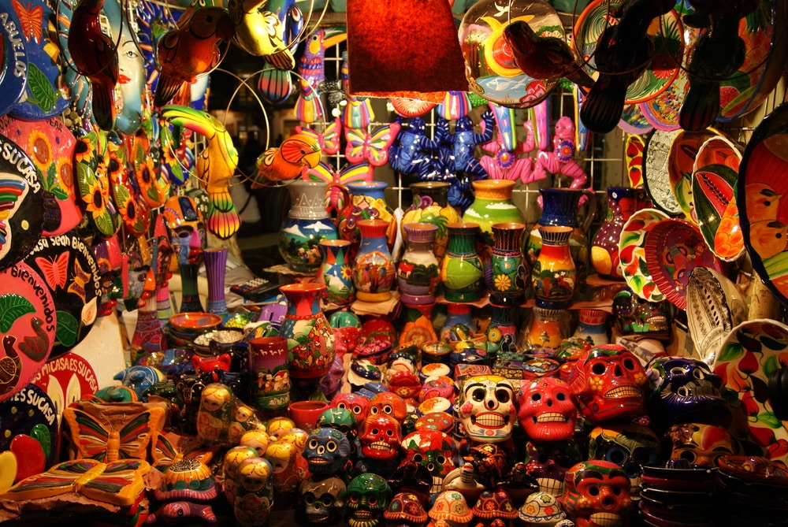

Lugares Turisticos
Inicio
Lugares turisticos
Cultura
Cultura
Guatemala es un país con una gran riqueza cultural y gastronómica, resultado de la mezcla entre las tradiciones indígenas mayas y la influencia española. Esta combinación ha dado lugar a costumbres únicas, llenas de color, historia y sabor.
Culturas de Guatemala
En Guatemala conviven diversas culturas, siendo la más representativa la cultura maya, que aún se mantiene viva en muchas comunidades. Los pueblos indígenas conservan sus idiomas, trajes típicos, tradiciones y formas de organización.
Algunos aspectos importantes de la cultura guatemalteca son:
Herencia maya: Civilizaciones como las que habitaron Tikal dejaron un legado impresionante en arquitectura, astronomía y matemáticas. Idiomas: Además del español, se hablan más de 20 idiomas mayas, como el k’iche’, kaqchikel y q’eqchi’. Trajes típicos: Cada región tiene su propio diseño, con colores y bordados que representan su identidad. Tradiciones y festividades: Celebraciones como el Día de los Muertos en Guatemala o la Semana Santa en Antigua Guatemala son famosas por su belleza y significado. Artesanías: Tejidos, cerámica y tallados hechos a mano forman parte importante de la economía y cultura.
Gastronomía de Guatemala
La gastronomía guatemalteca es variada y llena de sabores tradicionales, con ingredientes como el maíz, frijol, chile y especias.
Algunos platillos representativos son:
Pepián: Uno de los platos más antiguos, hecho con carne, verduras y una salsa espesa de especias. Kak'ik: Sopa de pavo con un sabor intenso y especiado, originaria de la cultura maya. Jocón: Preparado con pollo y una salsa verde a base de tomate y hierbas. Tamales: Hechos de masa de maíz rellena, envueltos en hojas de plátano. Chiles rellenos: Chiles rellenos de carne y verduras, acompañados con salsa. También destacan bebidas tradicionales como el atol de elote o el café guatemalteco, reconocido mundialmente por su calidad.
Conclusión
La cultura y la gastronomía de Guatemala reflejan la identidad de su gente, su historia y sus raíces. Cada tradición, idioma y platillo cuenta una historia que hace de este país un lugar único, lleno de diversidad y riqueza cultural.
